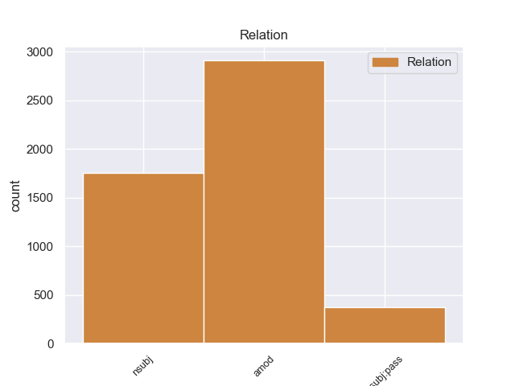
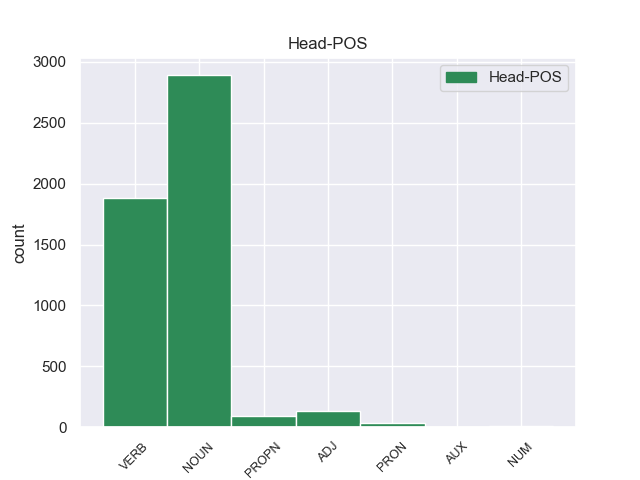
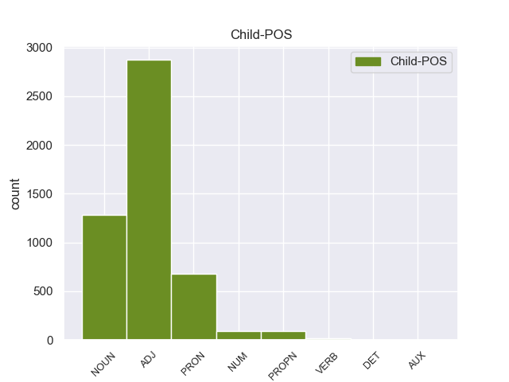

Distribution of features within this leaf



Agreement Rules sorted by frequency.
- When the dependent token is the adjectival modifier(amod) of the head token,
1 Σκιάθος _ _ _ _ 0 _ _ _
2 - _ _ _ _ 0 _ _ _
3 Η _ _ _ _ 0 _ _ _
4 Ιερά ιερός ADJ ADJ Case=Nom|Gender=Fem|Number=Sing 5 amod _ _
5 Μονή μονή NOUN NOUN Case=Nom|Gender=Fem|Number=Sing 0 _ _ _
6 Ευαγγελίστριας _ _ _ _ 0 _ _ _
7 . _ _ _ _ 0 _ _ _
1 Επιτρέψτε _ _ _ _ 0 _ _ _
2 μου _ _ _ _ 0 _ _ _
3 τώρα _ _ _ _ 0 _ _ _
4 να _ _ _ _ 0 _ _ _
5 κάνω _ _ _ _ 0 _ _ _
6 μερικές _ _ _ _ 0 _ _ _
7 παρατηρήσεις _ _ _ _ 0 _ _ _
8 σ _ _ _ _ 0 _ _ _
9 το _ _ _ _ 0 _ _ _
10 ζήτημα _ _ _ _ 0 _ _ _
11 της _ _ _ _ 0 _ _ _
12 δήλωσης _ _ _ _ 0 _ _ _
13 αξιοπιστίας _ _ _ _ 0 _ _ _
14 καθότι _ _ _ _ 0 _ _ _
15 το _ _ _ _ 0 _ _ _
16 ζήτημα ζήτημα NOUN NOUN Case=Nom|Gender=Neut|Number=Sing 18 nsubj _ _
17 αυτό _ _ _ _ 0 _ _ _
18 αναφέρεται αναφέρω VERB VERB Aspect=Imp|Mood=Ind|Number=Sing|Person=3|Tense=Pres|VerbForm=Fin|Voice=Pass 0 _ _ _
19 σ _ _ _ _ 0 _ _ _
20 την _ _ _ _ 0 _ _ _
21 έκθεση _ _ _ _ 0 _ _ _
22 παρακολούθησης _ _ _ _ 0 _ _ _
23 . _ _ _ _ 0 _ _ _
1 Την _ _ _ _ 0 _ _ _
2 24η_Ιουλίου _ _ _ _ 0 _ _ _
3 κυβέρνηση κυβέρνηση NOUN NOUN Case=Nom|Gender=Fem|Number=Sing 6 nsubj:pass _ _
4 Εθνικής _ _ _ _ 0 _ _ _
5 Ενότητας _ _ _ _ 0 _ _ _
6 ορκίστηκε ορκίζω VERB VERB Aspect=Perf|Mood=Ind|Number=Sing|Person=3|Tense=Past|VerbForm=Fin|Voice=Pass 0 _ _ _
7 σ _ _ _ _ 0 _ _ _
8 την _ _ _ _ 0 _ _ _
9 Αθήνα _ _ _ _ 0 _ _ _
10 , _ _ _ _ 0 _ _ _
11 με _ _ _ _ 0 _ _ _
12 πρωθυπουργό _ _ _ _ 0 _ _ _
13 τον _ _ _ _ 0 _ _ _
14 Κωνσταντίνο _ _ _ _ 0 _ _ _
15 Καραμανλή _ _ _ _ 0 _ _ _
16 . _ _ _ _ 0 _ _ _
Disagree Examples:
1 Η _ _ _ _ 0 _ _ _
2 Επιτροπή _ _ _ _ 0 _ _ _
3 αξίζει _ _ _ _ 0 _ _ _
4 την _ _ _ _ 0 _ _ _
5 επιδοκιμασία _ _ _ _ 0 _ _ _
6 μας _ _ _ _ 0 _ _ _
7 για _ _ _ _ 0 _ _ _
8 το _ _ _ _ 0 _ _ _
9 γεγονός _ _ _ _ 0 _ _ _
10 ότι _ _ _ _ 0 _ _ _
11 η _ _ _ _ 0 _ _ _
12 ευρωπαϊκή _ _ _ _ 0 _ _ _
13 διάρθρωση διάρθρωση NOUN NOUN Case=Nom|Gender=Fem|Number=Sing 22 nsubj _ _
14 και _ _ _ _ 0 _ _ _
15 η _ _ _ _ 0 _ _ _
16 ευρωπαϊκή _ _ _ _ 0 _ _ _
17 στρατηγική _ _ _ _ 0 _ _ _
18 της _ _ _ _ 0 _ _ _
19 κοινωνίας _ _ _ _ 0 _ _ _
20 των _ _ _ _ 0 _ _ _
21 πληροφοριών _ _ _ _ 0 _ _ _
22 διαφοροποιούνται διαφοροποιώ VERB VERB Aspect=Imp|Mood=Ind|Number=Plur|Person=3|Tense=Pres|VerbForm=Fin|Voice=Pass 0 _ _ _
23 θετικά _ _ _ _ 0 _ _ _
24 από _ _ _ _ 0 _ _ _
25 τις _ _ _ _ 0 _ _ _
26 άλλες _ _ _ _ 0 _ _ _
27 , _ _ _ _ 0 _ _ _
28 καθώς _ _ _ _ 0 _ _ _
29 έχει _ _ _ _ 0 _ _ _
30 ληφθεί _ _ _ _ 0 _ _ _
31 υπόψη _ _ _ _ 0 _ _ _
32 σε _ _ _ _ 0 _ _ _
33 αυτές _ _ _ _ 0 _ _ _
34 , _ _ _ _ 0 _ _ _
35 εκτός _ _ _ _ 0 _ _ _
36 από _ _ _ _ 0 _ _ _
37 την _ _ _ _ 0 _ _ _
38 ανταγωνιστικότητα _ _ _ _ 0 _ _ _
39 , _ _ _ _ 0 _ _ _
40 για _ _ _ _ 0 _ _ _
41 παράδειγμα _ _ _ _ 0 _ _ _
42 η _ _ _ _ 0 _ _ _
43 αλληλεγγύη _ _ _ _ 0 _ _ _
44 , _ _ _ _ 0 _ _ _
45 η _ _ _ _ 0 _ _ _
46 κοινωνική _ _ _ _ 0 _ _ _
47 ισότητα _ _ _ _ 0 _ _ _
48 και _ _ _ _ 0 _ _ _
49 η _ _ _ _ 0 _ _ _
50 απασχόληση _ _ _ _ 0 _ _ _
51 . _ _ _ _ 0 _ _ _
1 Τούτο _ _ _ _ 0 _ _ _
2 σημαίνει _ _ _ _ 0 _ _ _
3 ότι _ _ _ _ 0 _ _ _
4 η _ _ _ _ 0 _ _ _
5 πληροφόρηση πληροφόρηση NOUN NOUN Case=Nom|Gender=Fem|Number=Sing 9 nsubj _ _
6 και _ _ _ _ 0 _ _ _
7 η _ _ _ _ 0 _ _ _
8 προπαγάνδα _ _ _ _ 0 _ _ _
9 ακολουθούν ακολουθώ VERB VERB Aspect=Imp|Mood=Ind|Number=Plur|Person=3|Tense=Pres|VerbForm=Fin|Voice=Act 0 _ _ _
10 μια _ _ _ _ 0 _ _ _
11 πορεία _ _ _ _ 0 _ _ _
12 από _ _ _ _ 0 _ _ _
13 την _ _ _ _ 0 _ _ _
14 κορυφή _ _ _ _ 0 _ _ _
15 προς _ _ _ _ 0 _ _ _
16 τη _ _ _ _ 0 _ _ _
17 βάση _ _ _ _ 0 _ _ _
18 . _ _ _ _ 0 _ _ _
1 34 _ _ _ _ 0 _ _ _
2 του _ _ _ _ 0 _ _ _
3 κ. _ _ _ _ 0 _ _ _
4 Θέμα _ _ _ _ 0 _ _ _
5 : _ _ _ _ 0 _ _ _
6 Το _ _ _ _ 0 _ _ _
7 μεταρρυθμιστικό _ _ _ _ 0 _ _ _
8 πρόγραμμα _ _ _ _ 0 _ _ _
9 της _ _ _ _ 0 _ _ _
10 Επιτροπής _ _ _ _ 0 _ _ _
11 και _ _ _ _ 0 _ _ _
12 η _ _ _ _ 0 _ _ _
13 διεύρυνση _ _ _ _ 0 _ _ _
14 Την _ _ _ _ 0 _ _ _
15 1η _ _ _ _ 0 _ _ _
16 Μαρτίου _ _ _ _ 0 _ _ _
17 2000 _ _ _ _ 0 _ _ _
18 η _ _ _ _ 0 _ _ _
19 Ευρωπαϊκή _ _ _ _ 0 _ _ _
20 Επιτροπή _ _ _ _ 0 _ _ _
21 ενέκρινε _ _ _ _ 0 _ _ _
22 το _ _ _ _ 0 _ _ _
23 λευκό _ _ _ _ 0 _ _ _
24 βιβλίο _ _ _ _ 0 _ _ _
25 για _ _ _ _ 0 _ _ _
26 τη _ _ _ _ 0 _ _ _
27 μεταρρύθμιση _ _ _ _ 0 _ _ _
28 της _ _ _ _ 0 _ _ _
29 Επιτροπής _ _ _ _ 0 _ _ _
30 , _ _ _ _ 0 _ _ _
31 σ _ _ _ _ 0 _ _ _
32 το _ _ _ _ 0 _ _ _
33 οποίο _ _ _ _ 0 _ _ _
34 εξαγγέλλονται _ _ _ _ 0 _ _ _
35 μέτρα _ _ _ _ 0 _ _ _
36 και _ _ _ _ 0 _ _ _
37 δράσεις _ _ _ _ 0 _ _ _
38 που _ _ _ _ 0 _ _ _
39 προβλέπουν προβλέπω VERB VERB Aspect=Perf|Mood=Ind|Number=Plur|Person=3|Tense=Past|VerbForm=Fin|Voice=Act 0 _ _ _
40 μια _ _ _ _ 0 _ _ _
41 βαθειά βαθειος NOUN NOUN Case=Acc|Gender=Fem|Number=Sing 39 nsubj _ _
42 μεταρρύθμιση _ _ _ _ 0 _ _ _
43 των _ _ _ _ 0 _ _ _
44 υπηρεσιών _ _ _ _ 0 _ _ _
45 της _ _ _ _ 0 _ _ _
46 . _ _ _ _ 0 _ _ _
1 Όμως _ _ _ _ 0 _ _ _
2 το _ _ _ _ 0 _ _ _
3 Σύμφωνο _ _ _ _ 0 _ _ _
4 Σταθερότητας _ _ _ _ 0 _ _ _
5 δεν _ _ _ _ 0 _ _ _
6 επιβαρύνεται _ _ _ _ 0 _ _ _
7 μόνον _ _ _ _ 0 _ _ _
8 από _ _ _ _ 0 _ _ _
9 αυτό _ _ _ _ 0 _ _ _
10 αλλά _ _ _ _ 0 _ _ _
11 και _ _ _ _ 0 _ _ _
12 από _ _ _ _ 0 _ _ _
13 την _ _ _ _ 0 _ _ _
14 έλλειψη _ _ _ _ 0 _ _ _
15 αξιοπιστίας _ _ _ _ 0 _ _ _
16 των _ _ _ _ 0 _ _ _
17 διεθνών _ _ _ _ 0 _ _ _
18 οργανώσεων _ _ _ _ 0 _ _ _
19 και _ _ _ _ 0 _ _ _
20 της _ _ _ _ 0 _ _ _
21 Ευρωπαϊκής _ _ _ _ 0 _ _ _
22 Ένωσης _ _ _ _ 0 _ _ _
23 που που PRON PRON Case=Nom|Gender=Fem|Number=Sing|Person=3|PronType=Rel 37 nsubj _ _
24 μέσα _ _ _ _ 0 _ _ _
25 από _ _ _ _ 0 _ _ _
26 αυτόν _ _ _ _ 0 _ _ _
27 τον _ _ _ _ 0 _ _ _
28 κυκεώνα _ _ _ _ 0 _ _ _
29 των _ _ _ _ 0 _ _ _
30 αρμοδιοτήτων _ _ _ _ 0 _ _ _
31 , _ _ _ _ 0 _ _ _
32 την _ _ _ _ 0 _ _ _
33 κατασπατάληση _ _ _ _ 0 _ _ _
34 και _ _ _ _ 0 _ _ _
35 την _ _ _ _ 0 _ _ _
36 κακοδιαχείριση _ _ _ _ 0 _ _ _
37 μεταδίδουν μεταδίδω VERB VERB Aspect=Imp|Mood=Ind|Number=Plur|Person=3|Tense=Pres|VerbForm=Fin|Voice=Act 0 _ _ _
38 προς _ _ _ _ 0 _ _ _
39 τα _ _ _ _ 0 _ _ _
40 έξω _ _ _ _ 0 _ _ _
41 εικόνες _ _ _ _ 0 _ _ _
42 για _ _ _ _ 0 _ _ _
43 πράγματα _ _ _ _ 0 _ _ _
44 που _ _ _ _ 0 _ _ _
45 αν _ _ _ _ 0 _ _ _
46 δεν _ _ _ _ 0 _ _ _
47 είχαν _ _ _ _ 0 _ _ _
48 συμβεί _ _ _ _ 0 _ _ _
49 σ _ _ _ _ 0 _ _ _
50 την _ _ _ _ 0 _ _ _
51 ίδια _ _ _ _ 0 _ _ _
52 την _ _ _ _ 0 _ _ _
53 Ευρωπαϊκή _ _ _ _ 0 _ _ _
54 Ένωση _ _ _ _ 0 _ _ _
55 θα _ _ _ _ 0 _ _ _
56 έλεγε _ _ _ _ 0 _ _ _
57 κανείς _ _ _ _ 0 _ _ _
58 περιφρονητικά _ _ _ _ 0 _ _ _
59 ότι _ _ _ _ 0 _ _ _
60 πρόκειται _ _ _ _ 0 _ _ _
61 για _ _ _ _ 0 _ _ _
62 κλασσικά _ _ _ _ 0 _ _ _
63 βαλκανικά _ _ _ _ 0 _ _ _
64 φαινόμενα _ _ _ _ 0 _ _ _
65 . _ _ _ _ 0 _ _ _
1 Παρ _ _ _ _ 0 _ _ _
2 'όλο _ _ _ _ 0 _ _ _
3 που _ _ _ _ 0 _ _ _
4 η _ _ _ _ 0 _ _ _
5 έκθεση _ _ _ _ 0 _ _ _
6 Andersson _ _ _ _ 0 _ _ _
7 συγκράτησε _ _ _ _ 0 _ _ _
8 κάποιες _ _ _ _ 0 _ _ _
9 θετικές _ _ _ _ 0 _ _ _
10 προτάσεις _ _ _ _ 0 _ _ _
11 , _ _ _ _ 0 _ _ _
12 συμπεριλαμβανομένων _ _ _ _ 0 _ _ _
13 ορισμένων _ _ _ _ 0 _ _ _
14 τροπολογιών _ _ _ _ 0 _ _ _
15 που _ _ _ _ 0 _ _ _
16 καταθέσαμε _ _ _ _ 0 _ _ _
17 , _ _ _ _ 0 _ _ _
18 δεν _ _ _ _ 0 _ _ _
19 ενσωμάτωσε _ _ _ _ 0 _ _ _
20 ωστόσο _ _ _ _ 0 _ _ _
21 ένα _ _ _ _ 0 _ _ _
22 τμήμα _ _ _ _ 0 _ _ _
23 των _ _ _ _ 0 _ _ _
24 βασικών _ _ _ _ 0 _ _ _
25 σημείων _ _ _ _ 0 _ _ _
26 κριτικής _ _ _ _ 0 _ _ _
27 που που PRON PRON Case=Nom|Gender=Fem|Number=Sing|Person=3|PronType=Rel 28 nsubj _ _
28 ασκούμε ασκώ VERB VERB Aspect=Imp|Mood=Ind|Number=Plur|Person=1|Tense=Pres|VerbForm=Fin|Voice=Act 0 _ _ _
29 σ _ _ _ _ 0 _ _ _
30 την _ _ _ _ 0 _ _ _
31 πρόταση _ _ _ _ 0 _ _ _
32 της _ _ _ _ 0 _ _ _
33 Επιτροπής _ _ _ _ 0 _ _ _
34 ούτε _ _ _ _ 0 _ _ _
35 τις _ _ _ _ 0 _ _ _
36 ανησυχίες _ _ _ _ 0 _ _ _
37 που _ _ _ _ 0 _ _ _
38 διατυπώνουμε _ _ _ _ 0 _ _ _
39 σχετικά _ _ _ _ 0 _ _ _
40 με _ _ _ _ 0 _ _ _
41 τη _ _ _ _ 0 _ _ _
42 στρατηγική _ _ _ _ 0 _ _ _
43 για _ _ _ _ 0 _ _ _
44 τον _ _ _ _ 0 _ _ _
45 εκσυγχρονισμό _ _ _ _ 0 _ _ _
46 της _ _ _ _ 0 _ _ _
47 κοινωνικής _ _ _ _ 0 _ _ _
48 προστασίας _ _ _ _ 0 _ _ _
49 . _ _ _ _ 0 _ _ _